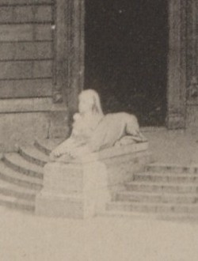

| type | other |
|---|---|
| name | Sphinx with mask (Hajós u. side) |
| wall | W0_22 |
| position | [16.662, -50.504, 0.6] |
| size | [1.1, 3.0, 1.7] |
| confidence | C |
| notes | Strobl Alajos, Carrara marble (S14/S15; S18 says limestone), installed 20 Sep 1884 |
| sculptor | Strobl Alajos |
| period | [1884, null] |
| sources | S14: Szobrok az Operaház homlokzatán (opera.hu) S15: Magyar Állami Operaház — hu.wikipedia S18: Szfinxek — Köztérkép |

# Sphinxes (SPHINX_H, SPHINX_D) - Two reclining sphinxes by Strobl Alajos, installed 20 Sep 1884 (S18 quoting Budapesti Hírlap 21 Sep 1884). - Material: Carrara marble (S14, S15); Köztérkép tags limestone (S18) → conflict logged. - Attributes: Hajós u. side holds a mask, Dalszínház u. side a laurel wreath (S18 user comment → C). - Position: on the cheek walls of the side-entrance steps of the front pavilions (S10 photo, S15).